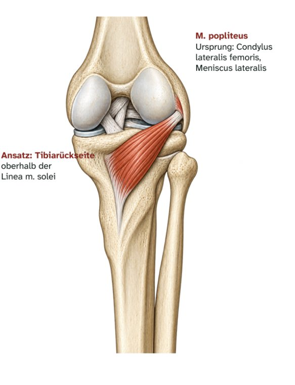

Hintere Unterschenkelmuskeln · tief
M. popliteus
Kniekehlenmuskel – Ursprung, Ansatz, Innervation und Funktion

Steckbrief
Steckbrief
- Ursprung
- Außenseite des Condylus lateralis femoris, Hinterhorn des Meniscus lateralis
- Ansatz
- Rückseite der Tibia oberhalb der Linea musculi solei
- Innervation
- N. tibialis (L4–S1)
Funktion
- Kniegelenk: dreht den Unterschenkel nach innen (bzw. den Oberschenkel nach außen, wenn der Fuß am Boden steht) und „entriegelt“ so das gestreckte Knie.
- Außerdem: schwache Beugung; zieht den Außenmeniskus beim Beugen nach hinten.
Zum Lernen

E-Book · Band 1 · 19,90 €
Muskel-Atlas Hüfte & Bein
Im E-Book findest du zu diesem Muskel außerdem:
- Merkhilfe und typische Prüfungsfalle
- Muskelfunktionstest, Längentest und Übungen per Video-QR-Code
- Dehn- und Kräftigungsübung
- Kurz-Check mit drei Fragen und Lösungen
Weitere Muskeln: Hintere Unterschenkelmuskeln
- 26VideoM. gastrocnemiusZwillingswadenmuskel · Hintere Unterschenkelmuskeln
- 27VideoM. soleusSchollenmuskel · Hintere Unterschenkelmuskeln
- 28VideoM. plantarisFußsohlenspanner · Hintere Unterschenkelmuskeln
- 30VideoM. tibialis posteriorHinterer Schienbeinmuskel · Hintere Unterschenkelmuskeln
- 31TextM. flexor digitorum longusLanger Zehenbeuger · Hintere Unterschenkelmuskeln
- 32TextM. flexor hallucis longusLanger Großzehenbeuger · Hintere Unterschenkelmuskeln